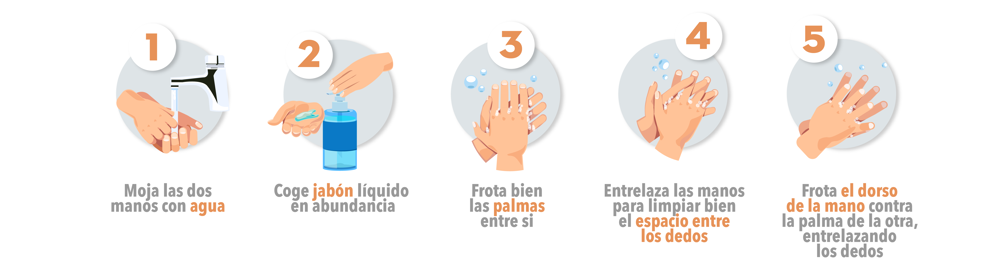
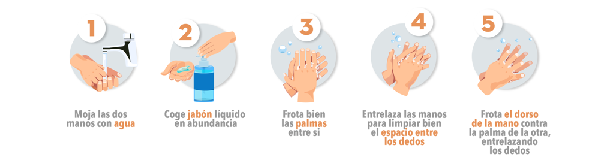
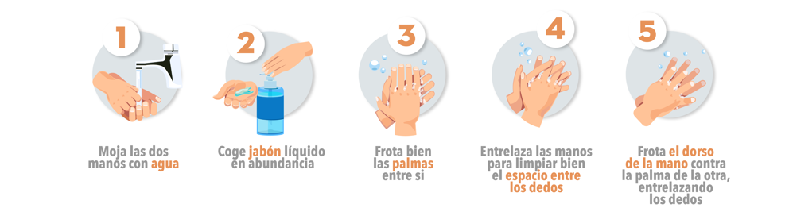
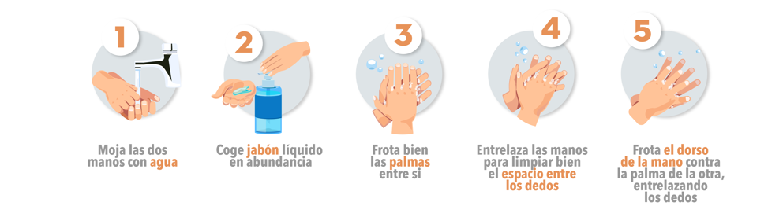

NO
SÍ. Contraer coronavirus NO significa que vayas a conservarlo toda la vida. La mayoría de las personas que contraen COVID-19 pueden recuperarse y eliminar el virus de sus cuerpos. Si contraes la enfermedad, asegúratge de tratar sus síntomas. Si tiene tos, fiebre y dificultad para respirar, busca rápidamente atención médica, pero antes llama por teléfono a tu médico de cabecera. La mayoría de los pacientes se recuperan gracias a los cuidados de apoyo.
NO. Los infectados con el virus deben recibir cuidados para aliviar los síntomas. Algunos tratamientos siguen en investigación.
SÍ. Investigaciones señalan que los coronavirus no sobreviven por mucho tiempo en superficies en estos casos.